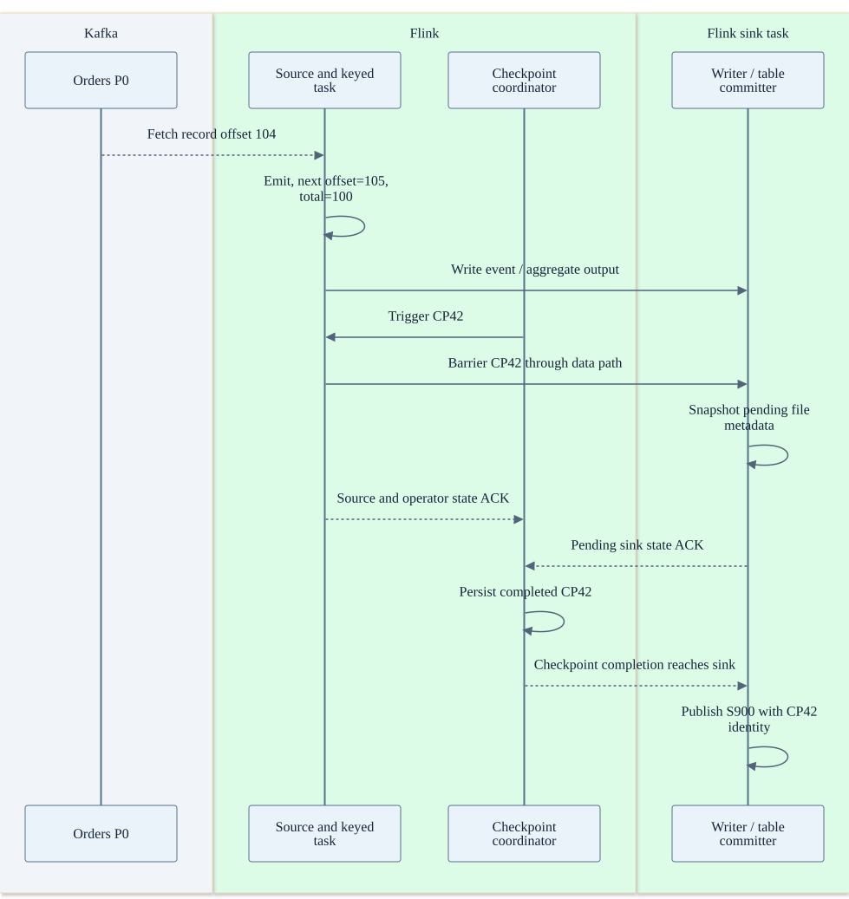
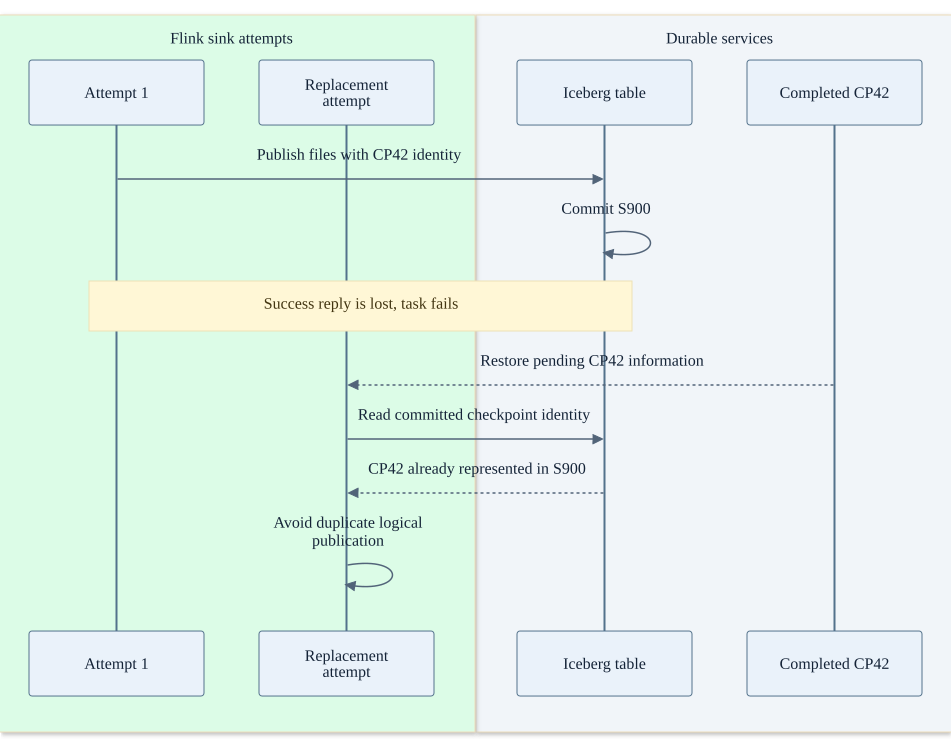

Chapter 16 · source-backed walkthrough
End to end: one event and every crash window
Use purchase-7 at Kafka orders P0 offset 104. Flink emits it, advances next offset to 105, updates c42 total to 100, and publishes output after checkpoint 42. Trace both a Kafka sink and an Iceberg sink, then follow a query reading the published table.
01
Successful Kafka-to-Flink-to-Iceberg path
The producer acknowledges a Kafka append according to its selected durability settings. The Flink reader fetches record 104, emits it and stores next offset 105. The keyed operator updates the customer total. An Iceberg writer writes data files and produces file metadata. Uploaded files are not yet published table rows.
CP42 captures the source position, operator state and pending sink information. After durable completion, the Iceberg committer publishes snapshot S900 and records the checkpoint identity. A query resolving S900 sees its files; a query pinned to S899 continues reading that older snapshot until it chooses a later one.
These event IDs, offsets, totals and snapshot names are illustrative. No live purchase pipeline was run. The sequence combines the inspected component contracts; version compatibility and deployment configuration require integration validation.
The record, checkpoint and table commit
The writer and committer are Flink operators, not a standalone Iceberg compute service. Their catalog and file-storage calls are expanded in the Iceberg chapter. A file upload alone is not the table visibility point.

02
Failure before checkpoint completion
Suppose CP41 stored next offset 100 and total 70. The task processes offsets 100..104 but CP42 does not complete. Recovery restores CP41 and replays from 100. Buffered / uploaded sink work belonging only to the failed attempt must not become an extra independently published effect.
For KafkaSink, abandoned transactions require abort / cleanup according to connector recovery rules; read_committed consumers must not see aborted output. For Iceberg, files written before a successful metadata publication can be unreferenced. Cleanup must distinguish genuinely orphaned files from a commit whose outcome is still unknown.
Rollback the recovery position, not the Kafka input log
Input remains in Kafka. The replacement task replays it against restored state.

03
Failure after completion or after external publication
If CP42 is complete but its sink notification is lost, the replacement attempt uses CP42 recovery data to finish the pending commit. It must not simply start reading at 105 and forget the pending sink transaction or file set.
If S900 was published but the committer lost its response, replaying the commit must not publish duplicate logical output. The Iceberg Flink path reconciles the maximum committed checkpoint for the restored job / operator identity. The Kafka sink uses the recovered producer / transaction protocol and error taxonomy.
Flink optional group-offset commit may still show P0=100 while CP42 is complete at 105. This discrepancy is possible because the external group commit is independent bookkeeping. It is not evidence by itself that Flink will replay from 100.
An ambiguous Iceberg commit response
The table state is consulted before treating the pending checkpoint as new work.

| Crash point | Durable evidence | Expected recovery action |
|---|---|---|
| Before producer acknowledgement | Kafka outcome may be unknown | Retry under producer protocol / application identity; do not infer absence from timeout. |
| After Flink emission, before CP42 completion | CP41 remains the recovery cut | Replay records after CP41 with restored operator state. |
| After CP42 completion, before external commit | CP42 includes source and sink recovery state | Recover pending sink commit; do not drop it. |
| After external commit, before local success handling | Destination may already contain committed result | Reconcile / idempotently retry using transaction or checkpoint identity. |
| After Spark Kafka write, before commits/42 | Offset-log range exists without completion marker | Replay can duplicate Kafka output; destination dedupe required. |
| During read of pinned Iceberg snapshot | Snapshot identifies immutable table state | Retry scan tasks against the same snapshot when files remain retained. |
04
Querying the result with Spark and Comet
The query resolves an Iceberg snapshot and plans candidate files using table metadata. Spark divides the physical plan into stages and schedules executor tasks. Compatible Comet segments execute native DataFusion operators in those executor processes. Parquet reads create Arrow batches; shuffle exchanges keyed intermediate results across executors when required.
A file or shuffle task failure is handled by the Spark retry envelope. A query pinned to S900 can replay deterministic reads of its retained files. Comet does not create the Iceberg snapshot or independently recover Spark stage state merely by using Rust.
Published snapshot to distributed native query
Catalog lookup and object-store reads are network operations. JNI calls are local to each executor.

05
Two sinks are not one global commit
A job may write both Kafka transaction T42 and Iceberg snapshot S900 after CP42. The checkpoint aligns their recovery state, but their external commit decisions are independent. One can become visible before the other. Readers comparing them need a shared event / checkpoint identity, reconciliation or a dedicated publication protocol.
If atomic cross-system visibility is a hard requirement, design that contract explicitly. A common approach is to expose a separate publication marker after both destinations have committed, with readers respecting that marker. That is an application design and requires its own durable recovery handling; it is not implicit in Flink checkpointing.
One checkpoint can release two independent commits
The missing edge between external commits is deliberate: neither destination atomically commits the other.

Inside the implementation
These excerpts come directly from the code paths used above. Expand a component to move from the system view into its implementation.
fk-emit KafkaRecordEmitter.java:45
The emitted record advances checkpointable split state to offset+1.
flink-connector-kafka/flink-connector-kafka/src/main/java/org/apache/flink/connector/kafka/source/reader/KafkaRecordEmitter.java · ae656dd6fe23
44 @Override
45 public void emitRecord(
46 ConsumerRecord<byte[], byte[]> consumerRecord,
47 SourceOutput<T> output,
48 KafkaPartitionSplitState splitState)
49 throws Exception {
50 try {
51 sourceOutputWrapper.setSourceOutput(output);
52 sourceOutputWrapper.setTimestamp(consumerRecord.timestamp());
53 deserializationSchema.deserialize(consumerRecord, sourceOutputWrapper);
54 splitState.setCurrentOffset(consumerRecord.offset() + 1);
55 } catch (Exception e) {
56 throw new IOException("Failed to deserialize consumer record due to", e);
57 }
58 }fk-state KafkaSourceReader.java:98
Checkpoint state is distinct from optional Kafka group offset commits.
flink-connector-kafka/flink-connector-kafka/src/main/java/org/apache/flink/connector/kafka/source/reader/KafkaSourceReader.java · ae656dd6fe23
97 @Override
98 public List<KafkaPartitionSplit> snapshotState(long checkpointId) {
99 List<KafkaPartitionSplit> splits = super.snapshotState(checkpointId);
100 if (!commitOffsetsOnCheckpoint) {
101 return splits;
102 }
103
104 if (splits.isEmpty() && offsetsOfFinishedSplits.isEmpty()) {
105 offsetsToCommit.put(checkpointId, Collections.emptyMap());
106 } else {
107 Map<TopicPartition, OffsetAndMetadata> offsetsMap =
108 offsetsToCommit.computeIfAbsent(checkpointId, id -> new HashMap<>());
109 // Put the offsets of the active splits.
110 for (KafkaPartitionSplit split : splits) {
111 // If the checkpoint is triggered before the partition starting offsetsTest source inspected or located, not executed: KafkaSourceReaderTest.java · testOffsetCommitOnCheckpointComplete
flink-checkpoint CheckpointCoordinator.java:1360
Completed checkpoint storage precedes notifications.
flink/flink-runtime/src/main/java/org/apache/flink/runtime/checkpoint/CheckpointCoordinator.java · 07805482705f
1359 */
1360 private void completePendingCheckpoint(PendingCheckpoint pendingCheckpoint)
1361 throws CheckpointException {
1362 final long checkpointId = pendingCheckpoint.getCheckpointID();
1363 final CompletedCheckpoint completedCheckpoint;
1364 final CompletedCheckpoint lastSubsumed;
1365 final CheckpointProperties props = pendingCheckpoint.getProps();
1366
1367 completedCheckpointStore.getSharedStateRegistry().checkpointCompleted(checkpointId);
1368
1369 try {
1370 completedCheckpoint = finalizeCheckpoint(pendingCheckpoint);
1371
1372 // the pending checkpoint must be discarded after the finalization
1373 Preconditions.checkState(pendingCheckpoint.isDisposed() && completedCheckpoint != null);Test source inspected or located, not executed: CheckpointCoordinatorRestoringTest.java
iceberg-flink IcebergFilesCommitter.java:231
Checkpoint completion publishes files through an Iceberg snapshot.
iceberg/flink/v2.3/flink/src/main/java/org/apache/iceberg/flink/sink/IcebergFilesCommitter.java · 48330b8dacab
230 @Override
231 public void notifyCheckpointComplete(long checkpointId) throws Exception {
232 super.notifyCheckpointComplete(checkpointId);
233 // It's possible that we have the following events:
234 // 1. snapshotState(ckpId);
235 // 2. snapshotState(ckpId+1);
236 // 3. notifyCheckpointComplete(ckpId+1);
237 // 4. notifyCheckpointComplete(ckpId);
238 // For step#4, we don't need to commit iceberg table again because in step#3 we've committed all
239 // the files,
240 // Besides, we need to maintain the max-committed-checkpoint-id to be increasing.
241 if (checkpointId > maxCommittedCheckpointId) {
242 LOG.info("Checkpoint {} completed. Attempting commit.", checkpointId);
243 commitUpToCheckpoint(dataFilesPerCheckpoint, flinkJobId, operatorUniqueId, checkpointId);
244 this.maxCommittedCheckpointId = checkpointId;Test source inspected or located, not executed: TestIcebergFilesCommitter.java · public void testRecoveryFromSnapshotWithoutCompletedNotification
flink-restore DefaultScheduler.java:358
Cancel, reset, restore and redeploy task attempts.
flink/flink-runtime/src/main/java/org/apache/flink/runtime/scheduler/DefaultScheduler.java · 07805482705f
357
358 private void restartTasksWithDelay(final FailureHandlingResult failureHandlingResult) {
359 final Set<ExecutionVertexID> verticesToRestart =
360 failureHandlingResult.getVerticesToRestart();
361
362 final Set<ExecutionVertexVersion> executionVertexVersions =
363 new HashSet<>(
364 executionVertexVersioner
365 .recordVertexModifications(verticesToRestart)
366 .values());
367 final boolean globalRecovery = failureHandlingResult.isGlobalFailure();
368
369 if (globalRecovery) {
370 log.info(
371 "{} tasks will be restarted to recover from a global failure.",fk-writer ExactlyOnceKafkaWriter.java:221
Prepare a transaction receipt; snapshot then starts the next transaction.
flink-connector-kafka/flink-connector-kafka/src/main/java/org/apache/flink/connector/kafka/sink/ExactlyOnceKafkaWriter.java · ae656dd6fe23
220 @Override
221 public Collection<KafkaCommittable> prepareCommit() {
222 // only return a KafkaCommittable if the current transaction has been written some data
223 if (currentProducer.hasRecordsInTransaction()) {
224 KafkaCommittable committable = KafkaCommittable.of(currentProducer);
225 LOG.debug("Prepare {}.", committable);
226 currentProducer.precommitTransaction();
227 return Collections.singletonList(committable);
228 }
229
230 // otherwise, we recycle the producer (the pool will reset the transaction state)
231 producerPool.recycle(currentProducer);
232 return Collections.emptyList();
233 }
234 Test source inspected or located, not executed: KafkaSinkITCase.java
iceberg-snapshot SnapshotProducer.java:484
Retry on CommitFailedException; ambiguous commit state propagates without unsafe cleanup.
iceberg/core/src/main/java/org/apache/iceberg/SnapshotProducer.java · 48330b8dacab
483 @SuppressWarnings("checkstyle:CyclomaticComplexity")
484 public void commit() {
485 // this is always set to the latest commit attempt's snapshot id.
486 AtomicLong newSnapshotId = new AtomicLong(-1L);
487 try (Timed ignore = commitMetrics().totalDuration().start()) {
488 try {
489 Tasks.foreach(ops)
490 .retry(base.propertyAsInt(COMMIT_NUM_RETRIES, COMMIT_NUM_RETRIES_DEFAULT))
491 .exponentialBackoff(
492 base.propertyAsInt(COMMIT_MIN_RETRY_WAIT_MS, COMMIT_MIN_RETRY_WAIT_MS_DEFAULT),
493 base.propertyAsInt(COMMIT_MAX_RETRY_WAIT_MS, COMMIT_MAX_RETRY_WAIT_MS_DEFAULT),
494 base.propertyAsInt(COMMIT_TOTAL_RETRY_TIME_MS, COMMIT_TOTAL_RETRY_TIME_MS_DEFAULT),
495 2.0 /* exponential */)
496 .onlyRetryOn(CommitFailedException.class)
497 .countAttempts(commitMetrics().attempts())Test source inspected or located, not executed: TestSnapshotProducer.java
fk-offset KafkaSourceReader.java:126
Offset commit failure is logged; restored Flink split state remains the recovery authority.
flink-connector-kafka/flink-connector-kafka/src/main/java/org/apache/flink/connector/kafka/source/reader/KafkaSourceReader.java · ae656dd6fe23
125 @Override
126 public void notifyCheckpointComplete(long checkpointId) throws Exception {
127 LOG.debug("Committing offsets for checkpoint {}", checkpointId);
128 if (!commitOffsetsOnCheckpoint) {
129 return;
130 }
131
132 Map<TopicPartition, OffsetAndMetadata> committedPartitions =
133 offsetsToCommit.get(checkpointId);
134 if (committedPartitions == null) {
135 LOG.debug("Offsets for checkpoint {} have already been committed.", checkpointId);
136 return;
137 }
138
139 if (committedPartitions.isEmpty()) {spark-kafka KafkaSink.scala:34
Process-local latestBatchId guards repeated calls; it is not a durable Kafka transaction.
spark/connector/kafka-0-10-sql/src/main/scala/org/apache/spark/sql/kafka010/KafkaSink.scala · f9358a5587a2
33
34 override def addBatch(batchId: Long, data: DataFrame): Unit = {
35 if (batchId <= latestBatchId) {
36 logInfo(log"Skipping already committed batch ${MDC(BATCH_ID, batchId)}")
37 } else {
38 KafkaWriter.write(data.queryExecution,
39 executorKafkaParams, topic)
40 latestBatchId = batchId
41 }
42 }
43 }
44 Test source inspected or located, not executed: KafkaSinkSuite.scala
iceberg-recover IcebergFilesCommitter.java:166
Restoration reconciles recorded checkpoint IDs against published table snapshots.
iceberg/flink/v2.3/flink/src/main/java/org/apache/iceberg/flink/sink/IcebergFilesCommitter.java · 48330b8dacab
165 () -> table, table.properties(), flinkJobId, operatorUniqueId, subTaskId, attemptId);
166 this.maxCommittedCheckpointId = INITIAL_CHECKPOINT_ID;
167
168 this.checkpointsState = context.getOperatorStateStore().getListState(STATE_DESCRIPTOR);
169 this.jobIdState = context.getOperatorStateStore().getListState(JOB_ID_DESCRIPTOR);
170 if (context.isRestored()) {
171 Iterable<String> jobIdIterable = jobIdState.get();
172 if (jobIdIterable == null || !jobIdIterable.iterator().hasNext()) {
173 LOG.warn(
174 "Failed to restore committer state. This can happen when operator uid changed and Flink "
175 + "allowNonRestoredState is enabled. Best practice is to explicitly set the operator id "
176 + "via FlinkSink#Builder#uidPrefix() so that the committer operator uid is stable. "
177 + "Otherwise, Flink auto generate an operator uid based on job topology."
178 + "With that, operator uid is subjective to change upon topology change.");
179 return;iceberg-scan DataTableScan.java:64
Snapshot manifests are filtered and planned into file scan tasks.
iceberg/core/src/main/java/org/apache/iceberg/DataTableScan.java · 48330b8dacab
63 @Override
64 public CloseableIterable<FileScanTask> doPlanFiles() {
65 Snapshot snapshot = snapshot();
66
67 FileIO io = table().io();
68 List<ManifestFile> dataManifests = snapshot.dataManifests(io);
69 List<ManifestFile> deleteManifests = snapshot.deleteManifests(io);
70 scanMetrics().totalDataManifests().increment((long) dataManifests.size());
71 scanMetrics().totalDeleteManifests().increment((long) deleteManifests.size());
72 ManifestGroup manifestGroup =
73 new ManifestGroup(io, dataManifests, deleteManifests)
74 .caseSensitive(isCaseSensitive())
75 .select(scanColumns())
76 .filterData(filter())
77 .schemasById(schemas())spark-launch CoarseGrainedSchedulerBackend.scala:457
Driver serializes task descriptions and sends LaunchTask to executor endpoints.
spark/core/src/main/scala/org/apache/spark/scheduler/cluster/CoarseGrainedSchedulerBackend.scala · f9358a5587a2
456 // Launch tasks returned by a set of resource offers
457 private def launchTasks(tasks: Seq[Seq[TaskDescription]]): Unit = {
458 for (task <- tasks.flatten) {
459 val serializedTask = TaskDescription.encode(task)
460 if (serializedTask.limit() >= maxRpcMessageSize) {
461 Option(scheduler.taskIdToTaskSetManager.get(task.taskId)).foreach { taskSetMgr =>
462 try {
463 var msg = "Serialized task %s:%d was %d bytes, which exceeds max allowed: " +
464 s"${RPC_MESSAGE_MAX_SIZE.key} (%d bytes). Consider increasing " +
465 s"${RPC_MESSAGE_MAX_SIZE.key} or using broadcast variables for large values."
466 msg = msg.format(task.taskId, task.index, serializedTask.limit(), maxRpcMessageSize)
467 taskSetMgr.abort(msg)
468 } catch {
469 case e: Exception => logError("Exception in error callback", e)
470 }comet-jni jni_api.rs:1242
Native execution uses a DataFusion plan inside the Spark executor process.
datafusion-comet/native/core/src/execution/jni_api.rs · 1628c520096e
1241 // so we should always execute partition 0.
1242 let stream = root_op.native_plan.execute(0, task_ctx)?;
1243
1244 if exec_context.scans.is_empty() && exec_context.shuffle_scans.is_empty() {
1245 // No JVM data sources — spawn onto tokio so the executor
1246 // thread parks in blocking_recv instead of busy-polling.
1247 exec_context.batch_producer =
1248 Some(BatchProducer::spawn(&get_runtime(), stream));
1249 } else {
1250 exec_context.stream = Some(stream);
1251 }
1252 exec_context.root_op = Some(root_op);
1253 } else {
1254 // Pull input batches
1255 pull_input_batches(exec_context)?;spark-shuffle ShuffleBlockFetcherIterator.scala:86
Reducers fetch local or remote shuffle blocks.
spark/core/src/main/scala/org/apache/spark/storage/ShuffleBlockFetcherIterator.scala · f9358a5587a2
85 private[spark]
86 final class ShuffleBlockFetcherIterator(
87 context: TaskContext,
88 shuffleClient: BlockStoreClient,
89 blockManager: BlockManager,
90 mapOutputTracker: MapOutputTracker,
91 blocksByAddress: Iterator[(BlockManagerId, collection.Seq[(BlockId, Long, Int)])],
92 streamWrapper: (BlockId, InputStream) => InputStream,
93 maxBytesInFlight: Long,
94 maxReqsInFlight: Int,
95 maxBlocksInFlightPerAddress: Int,
96 val maxReqSizeShuffleToMem: Long,
97 maxAttemptsOnNettyOOM: Int,
98 detectCorrupt: Boolean,
99 detectCorruptUseExtraMemory: Boolean,fk-commit KafkaCommitter.java:103
Retryable and fenced transaction failures are distinguished.
flink-connector-kafka/flink-connector-kafka/src/main/java/org/apache/flink/connector/kafka/sink/internal/KafkaCommitter.java · ae656dd6fe23
102 producer = writerProducer.orElseGet(() -> getProducer(committable));
103 producer.commitTransaction();
104 backchannel.send(TransactionFinished.successful(committable.getTransactionalId()));
105 } catch (RetriableException e) {
106 LOG.warn(
107 "Encountered retriable exception while committing {}.", transactionalId, e);
108 request.retryLater();
109 } catch (ProducerFencedException e) {
110 logFencedRequest(request, e);
111 handleFailedTransaction(producer);
112 request.signalFailedWithKnownReason(e);
113 } catch (InvalidTxnStateException e) {
114 // This exception only occurs when aborting after a commit or vice versa.
115 // It does not appear on double commits or double aborts.
116 LOG.error(Test source inspected or located, not executed: KafkaCommitterTest.java